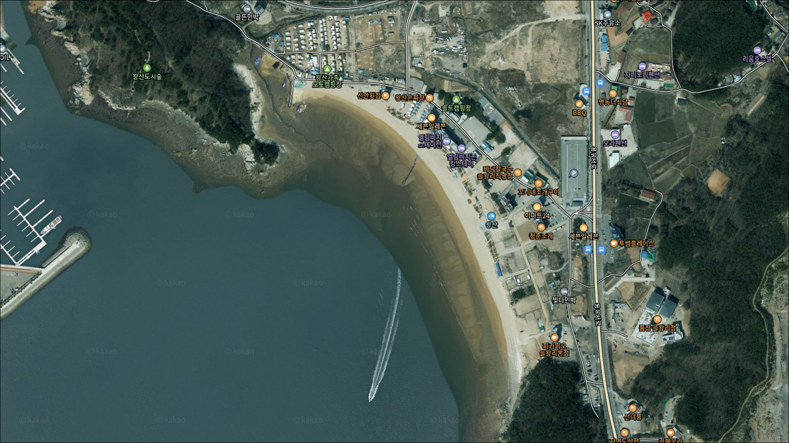
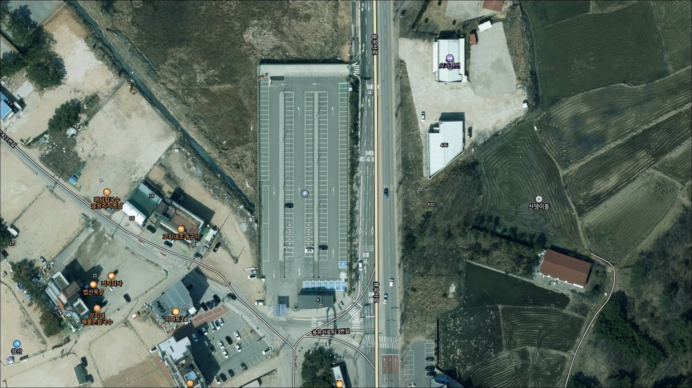
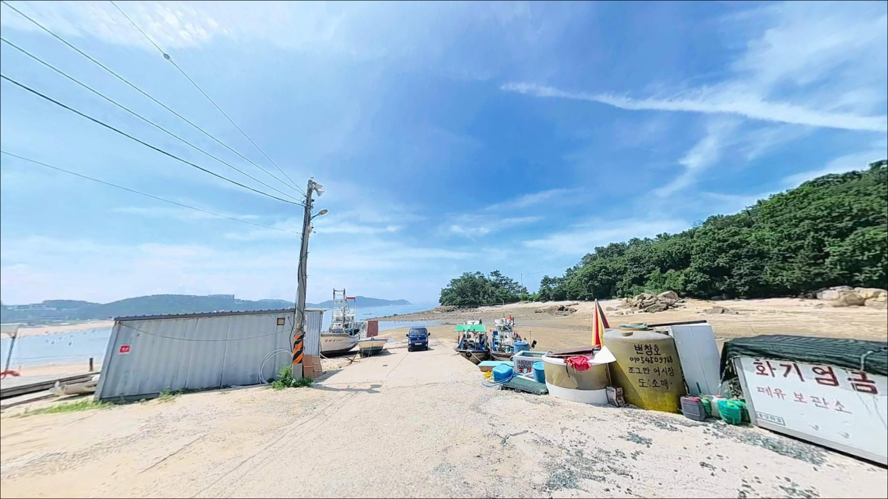
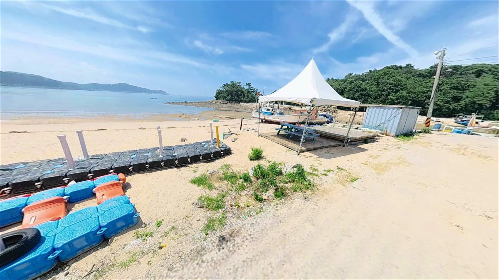
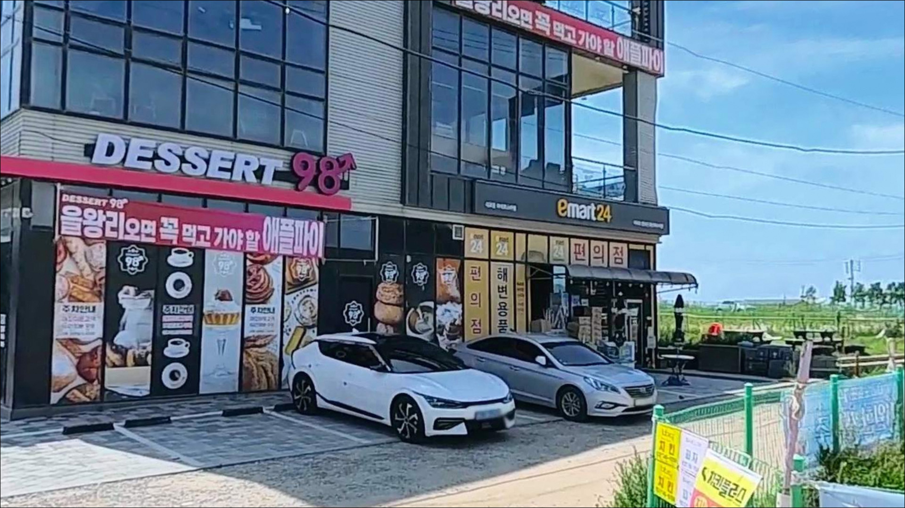
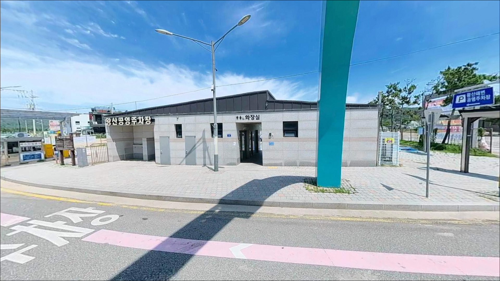
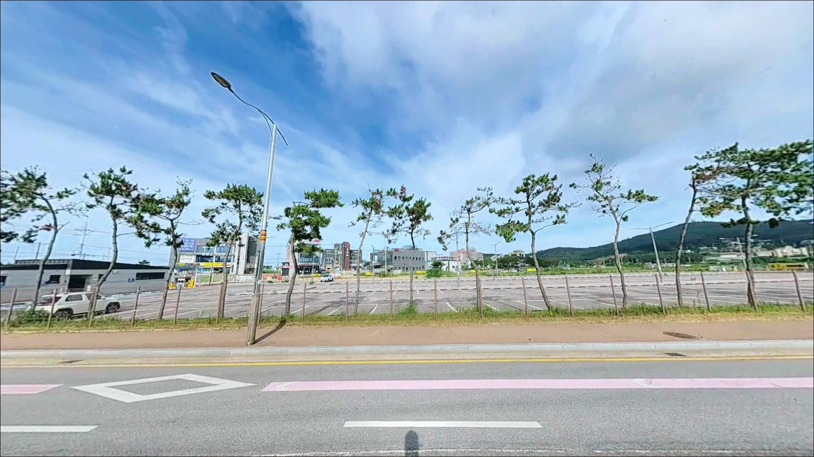
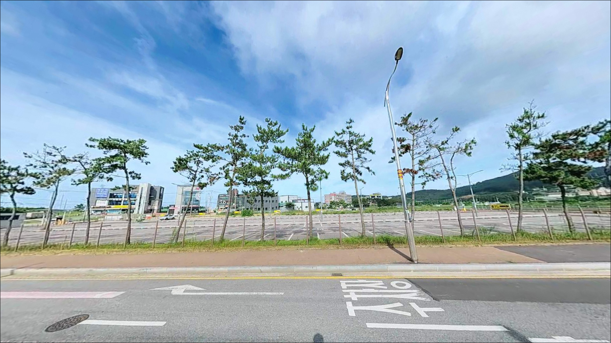
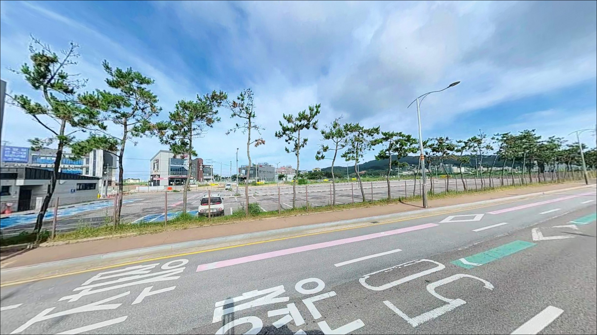

왕산해수욕장, 영종도 인천 중구 노을빛이 스며드는 차박, 낚시 겸용 감성 장소


왕산해수욕장
인천 중구 을왕동 810-204
왕산해수욕장에서 가장 자주 생기는 실수는
물때를 확인하지 않고 진입하는 것입니다.
서해 조차 특성상 간조 시 수심이 1.5m 수준까지 낮아지고
백사장이 200m 가까이 드러나,
낚시 자리 자체가 사라지는 상황이 생깁니다.
들물이 차오르는 타이밍부터
만조 전후 2~3시간이 이 포인트의
실질적인 낚시 시간대입니다.
인천 영종도 서측 해안에 자리한 왕산해수욕장은
넓은 백사장과 양측 기암괴석 구간이
함께 갖춰진 서해 해변형 포인트입니다.
독립 방파제 구조는 없지만,
갯바위 구간과 백사장 원투 자리가
물때를 맞추면 살아나는 구조입니다.
이 글은 왕산해수욕장의
지형 구조, 진입 환경, 낚시 여건, 차박 조건에
집중합니다.
조황 단정이나 특정 어종 보장은
이 글의 범위에 포함되지 않습니다.

1. 진입 동선과 포인트 접근성
왕산해수욕장은 영종도 서해안 관광도로에서
직접 접근되는 구조입니다.
진입로는 왕복 2차선 포장도로로,
일반 승용차와 소형 SUV 기준으로는
진입 난이도가 낮은 편입니다.
다만 성수기 주말에는 관광 차량이 집중되어
진입로 정체와 주차 혼잡이 생기는 편입니다.
주차는 해수욕장 공영주차장을 기준으로 하며,
개장 기간에는 사설 주차장도 함께 운영됩니다.
사설 주차장 요금은 성수기 기준 1일 1만 원 수준입니다.
회차 공간은 해변 배후 도로를 통해
원활한 편이지만,
대형 캠핑 차량이라면 성수기 주말 혼잡을
미리 고려하는 편이 좋습니다.
백사장 내 차량 직접 진입은 금지되어 있습니다.
낚시 자리인 갯바위 구간까지는
주차 후 도보로 이동하는 방식이 기본입니다.
야간 낚시라면 주차 후 이동 동선과
조명 확보 여부를 사전에 파악해 두는 편이
안전합니다.

2. 차박 환경과 야간 체류 여건
왕산해수욕장은 차박지로 알려진 곳이기도 하지만,
백사장 내 차량 직접 진입이 금지되어 있습니다.
실제 차박 방식은 공영주차장 또는
인근 유료 주차 구역에 차를 대고
주차장 내 체류 형태가
현실적입니다.
해변 주변으로 펜션, 식당, 카페가 밀집되어 있어
야간에도 조명이 어느 정도 유지됩니다.
낙조 이후에는 유동 인구가 줄어드는 편이라
늦은 시간대는 비교적 조용한 편이지만,
성수기에는 야간에도 인적이 남아 있습니다.
해안선이 서쪽을 향해 있어
북서풍의 영향을 직접 받을 수 있어
계절에 따라 바람이 강하게 부는 날이 있습니다.
인근에 오토캠핑장·글램핑·카라반 대여 시설이
공식 운영되는 것으로 확인됩니다.
차에서 하룻밤 머무는 것이 목적이라면
이 시설들을 활용하는 것이
더 안정적인 선택입니다.
백사장 내 취사는 숯불 외
화롯불 금지 규정이 적용됩니다.


3. 주변 편의시설 및 인프라 현황
왕산해수욕장 반경 1km 내에는
CU 왕산해수욕장점을 비롯한 편의점이 있으며,
을왕로 일대에는 바지락칼국수, 조개구이, 횟집 등
식당이 밀집해 있습니다.
낚시 전후 식사 해결은
이 권역에서 어렵지 않은 편입니다.
화장실과 그늘막, 파라솔은
해수욕장 개장 시즌에 운영됩니다.
주유소는 을왕리 인근에 위치하며,
응급 상황 발생 시 인천국제공항 의료센터가
반경 10km 내 가장 가까운 의료 시설입니다.
낚시 소품이나 채비 보충이 필요한 경우,
왕산해수욕장 인근에서
낚시 전문점을 찾기는 어렵습니다.
채비는 출발 전에 충분히 준비하고
여분을 넉넉히 갖춰 가는 편이 좋습니다.

4. 방문 전 반드시 챙겨야 할 준비사항
이 포인트를 찾기 전에 가장 먼저 확인할 것은
물때입니다.
바다타임에서 왕산해수욕장 기준 물때를 확인하고,
들물이 시작되는 타이밍부터
만조 전후 2~3시간을 중심으로
출발 시각을 맞추는 것이 기본 전략입니다.
간조 타이밍에 도착하면 수심이 낮아
낚시가 어렵습니다.
갯바위 구간에 진입할 때는
구명조끼를 반드시 착용해야 합니다.
특히 들물 시간대에는 발판이 빠르게 잠기므로
퇴로를 항상 확인하면서 이동하는 것이
갯바위 낚시의 기본 매너입니다.
야간에는 갯바위 이끼로 인해 미끄럼이 심하니
미끄럼 방지 신발과 헤드랜턴은 필수입니다.
여름 성수기에는 해수욕객과 수상레저 이용객이 많아
낚시 가능 공간이 제한될 수 있습니다.
이 시기에는 이른 아침이나
늦은 저녁 시간대로 입장 타이밍을 조정하는 것이
충돌을 줄이는 방법입니다.

5. 서해 조차가 이곳 낚시 자리를 바꾸는 방식
왕산해수욕장의 낚시 가능 구간은
크게 두 곳으로 나뉩니다.
백사장 구간과 백사장 양측 기암괴석 구간입니다.
독립 방파제 구조는 없으며,
갯바위가 사실상 유일한 도보권 낚시 구조물입니다.
진입 전 갯바위 구간의 위치와
접근 동선을 파악해 두는 것이
이 포인트 공략의 첫 번째 조건입니다.
서해안 특성상 조차가 크고,
만조 시 수심은 약 3m,
간조 시에는 1.5m 수준까지 낮아집니다.
간조 때는 백사장이 200m 가까이 드러나
낚시 자리 자체가 줄어드는 구조입니다.
들물이 차오르기 시작하는 타이밍부터
만조 전후가 이 포인트의 핵심 낚시 시간입니다.
갯바위 구간에서는 조류 흐름이 생기는
들물 초반부터 어종 활성도가 오르는 경향이 있습니다.
백사장 구간은 간조 직전 갯골이 형성되는
지점을 노리는 방식이 이 지형에 맞는 편입니다.
조차와 수심 변화가 크므로
정조 전후에는 포인트 이동을 고려하는 시간입니다.
최신 조황은 가기 전에 꼭 검색해 보시기 바랍니다.


6. 포인트에 어울리는 낚시 스타일
원투낚시는 백사장 구간에서
가장 기본적으로 맞는 방식입니다.
모래 바닥이라 밑걸림이 적고,
멀리 던져 숭어, 망둥어, 붕장어 계열을
바닥층에서 노리기 좋은 구조입니다.
봉돌 무게는 조류 세기에 맞춰 조정하며,
사리 전후에는 흐름이 세지는 만큼
무게를 올려 대응하는 편이 좋습니다.
갯바위 구간에서는 루어낚시가 어울립니다.
기암괴석 구조는 우럭, 노래미, 광어 계열이
숨기 좋은 지형 조건을 갖추고 있습니다.
워킹으로 갯바위 경계를 탐색하는 방식이
이 구간에 잘 맞으며,
들물 이후 조류 흐름이 생기는 타이밍에
입질 반응이 살아나는 편입니다.
찌낚시도 갯바위 구간에서 운용할 수 있습니다.
들물 구간에서 갯바위 사이 수심이 형성되는
지점을 중심으로 공략하면
숭어 계열 어종을 기대해 볼 수 있습니다.
여름 성수기에는 해수욕객과 겹치는 구간에서
캐스팅 방향과 거리를 반드시 주의해야 합니다.

7. 대안 포인트와 플랜 B 동선
왕산해수욕장에서 조류가 기대에 못 미치거나
성수기 혼잡으로 낚시 공간이 여의치 않을 때,
첫 번째 대안은 삼목항 방파제입니다.
차량으로 10분 내외 거리이며,
방파제 구조라 발판이 안정적입니다.
망둥어 포인트로 낚시인들이 꾸준히 찾는 곳이고
주차 후 도보 접근이 가능합니다.
왕산에서 남쪽으로 5분 거리에는
을왕리 갯바위 구간이 있습니다.
서울·경기권에서 접근성 좋은 포인트 중 하나로
낚시인들에게 알려진 곳입니다.
갯바위 구조로 루어낚시 중심 공략이 가능하며,
왕산과 조합해 같은 날 이동하기 좋은 동선입니다.
더 다양한 낚시 여건을 원한다면
무의도 광명항 방파제와 갯바위를
고려해 볼 수 있습니다.
광어, 농어, 붕장어, 삼치, 우럭 등
다양한 어종이 기대되는 포인트로 알려져 있으며,
배편 또는 차량으로 약 15~20분 거리입니다.
차박 여건이 더 조용한 환경을 원한다면
무의도 방면 해안도로를 탐색하는 방식도
있습니다.

물때 하나가
왕산 갯바위의 조건을 가릅니다
갯바위 루어낚시나 해변 원투낚시를 즐기는 낚시인이라면
왕산해수욕장의 지형 구조는 나쁘지 않은 편입니다.
들물 타이밍만 맞추면 갯바위 루어와
백사장 원투낚시를 병행할 수 있는 구조이며,
수도권에서 접근성 좋은 서해 해변 포인트로
활용할 수 있는 곳입니다.
반면 물때를 무시하고 간조 타이밍에 도착하거나,
성수기 주말에 낚시 공간을 기대하고 찾아가면
낚시 자체가 어려운 상황을 맞닥뜨릴 수 있습니다.
물때 확인, 계절별 시간대 조정,
갯바위 안전 장비,
이 세 가지를 갖추고 간다면
아쉬움 없는 출조가 될 수 있는 곳입니다.
낙조가 아름답기로 알려진 해변에서
들물 타이밍을 기다리며 낚싯대를 펴는 저녁 출조라면,
왕산해수욕장 갯바위 낚시와
인근 주차장 차박을
자연스럽게 엮어볼 수 있는 곳입니다.